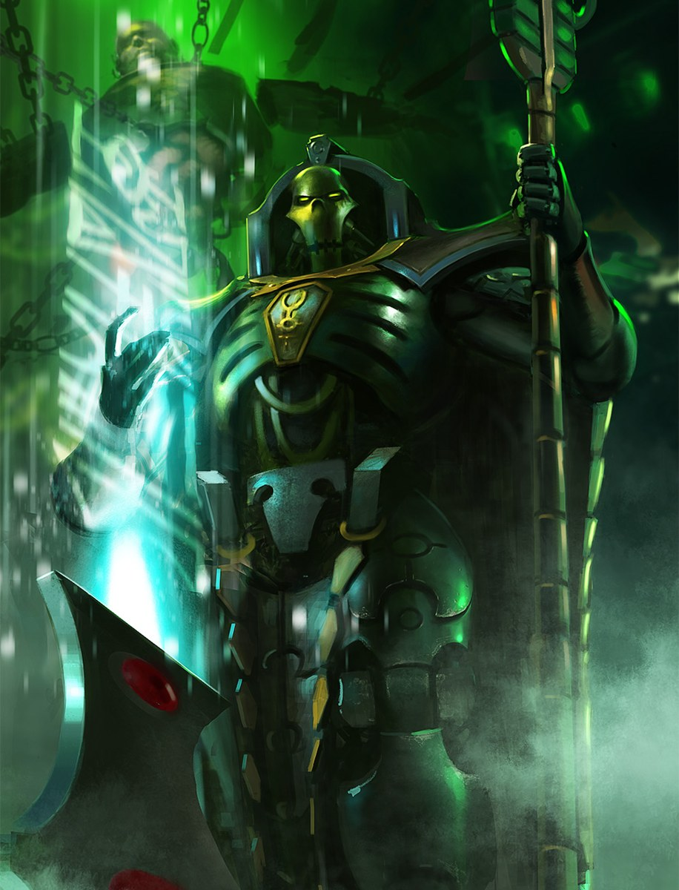

Trazyn the Infinite
| Trazyn the Infinite | |
|---|---|
| Overlord of Solemnace, Archaeovist of the Nihilakh Dynasty | |
 Trazyn among his galleries, as pictured by an Ordo Xenos artist from survivor testimony Artwork © Games Workshop | |
| Overlord of Solemnace | |
| Tenure | Before the Great Sleep (c. 60 million years ago) – present[a] |
| Dynasty | Nihilakh Dynasty |
| Born | Before the War in Heaven, as a mortal Necrontyr |
| Status | Active in the Era Indomitus |
| Allegiance | His own collection; nominally the Nihilakh Dynasty |
| Homeworld | Solemnace, a Tomb World |
| Aliases | Nemesor Koschai; Thantekh the Deathless |
| Rival | Orikan the Diviner |
| Wargear | Empathic Obliterator; Tesseract Labyrinths; mindshackle scarabs; surrogate bodies |
| Known for | The Prismatic Galleries; his part in the Fall of Cadia (999.M41); the capture of Ursarkar Creed |
Trazyn the Infinite is an Overlord of the Necrons, master of the Tomb World of Solemnace in the Nihilakh Dynasty, and the galaxy's most prolific collector. He gathers artefacts, people and whole scenes of history into the galleries beneath Solemnace, and he regards himself as the curator of the galaxy's past. Imperial records know him as a thief of relics and a taker of captives; he calls himself an Archaeovist. He is called "the Infinite" because his consciousness can pass between bodies, so that destroying one of his forms does not destroy him.[1][2]
Trazyn has stolen from the Imperium, the Aeldari, the Orks, the T'au and other Necron dynasties without distinction. In 999.M41 he intervened at the Fall of Cadia, helping the Archmagos Belisarius Cawl to understand the Cadian Pylons, releasing Imperial warriors held in his collection and, in the last hour, carrying off the Lord Castellan Ursarkar Creed. In the Era Indomitus he has occupied a score of Imperial worlds to catalogue them before war destroys them.[1][3]
Origins
[edit]Little is known of Trazyn's mortal life. He was a noble of the Necrontyr before biotransference, and he went into the bio-foundries, by his own account, in chains. He fought in the War in Heaven and then entered the Great Sleep with his dynasty, some sixty million years ago. Unlike most Necron nobles, who woke with their minds dulled by the long sleep, Trazyn woke with his intellect and personality intact. His long feud with the Chronomantic Cryptek Orikan the Diviner dates, by both their accounts, to before the Sleep.[1][2]
The galleries of Solemnace
[edit]The vaults of Solemnace hold Trazyn's collection. Imperial sources list among its contents the preserved head of Sebastian Thor, the wraithbone choir of the craftworld Altansar, the ossified husk of an Enslaver, and a giant in baroque power armour frozen in a scream. Its greatest wonders are the Prismatic Galleries, tableaux of historical events in which the figures are living beings turned into hard-light holograms. Some are the original participants, taken from the battlefield at the moment of victory or defeat; others are substitutes, for Trazyn accepts imitations where the original is lost. One gallery shows the death of Lord Solar Macharius, and the uniforms of about a tenth of its Guardsmen are three hundred years out of date.[1][2]
When a gallery is damaged Trazyn replenishes it by raids, which may be no more than a handful of abductions or may take whole populations. He is barred from the catacombs of Mandragora, the crownworld of the Sautekh Dynasty, after an attempt to take the Staff of the Destroyer, and many dynasties treat him as a thief.[1]
Methods
[edit]Trazyn seldom acts openly. He travels under pseudonyms taken from Necron legend, and conducts his dealings with other races through agents controlled by mindshackle scarabs. He sends his will into surrogate bodies, which may be built for the purpose or may be other Necron lords whose minds he suppresses. If the body he wears is destroyed, his consciousness returns to his true form or to another surrogate, which then takes his shape. His wargear includes the Empathic Obliterator, a staff that strikes down every being bound to its victim by kinship or loyalty, and the Tesseract Labyrinths, devices that trap their captives in folded space for later display.[1][4]
Encounters with the Imperium
[edit]The Inquisition
[edit]Trazyn's activity has long attracted the attention of the Ordo Xenos and of Rogue Traders. The Inquisitor Helynna Valeria dealt with him for years before her death at the hands of other Inquisitors; the Ordo Hereticus Inquisitor Katarinya Greyfax and her Tempestus Scions of the 55th Kappic Eagles were captured by him, probably in the 41st millennium, and kept in a Tesseract Labyrinth.[2][5][b]
The Spear of Vulkan
[edit]Trazyn twice tried to take the Spear of Vulkan, one of the artefacts of the Salamanders' primarch Vulkan. In 878.M41 he was defeated in single combat by the Forgefather Vulkan He'stan. He tried again during the Tochran Crusade of 943.M41 and failed a second time.[1]
Cadia
[edit]
In 999.M41, as the Thirteenth Black Crusade reached Cadia, Trazyn was warned by the sudden ringing of a relic in his vaults and by the Celestial Orrery of the Oruscar Dynasty, which showed a corruption spreading from the Cadian system. He concluded that a victory for Chaos would ruin the galaxy he wished to collect, and went to Cadia. In the caverns beneath the Elysion Fields he found Belisarius Cawl at work on the pylons and offered his help. Cawl at first took him for the Harlequin Sylandri Veilwalker, then for an abomination, but accepted.[3][1]
When Abaddon the Despoiler led the Black Legion into the caverns, Trazyn opened a Tesseract Labyrinth and released a part of his Imperial collection: Lieutenant-Commander Cerantes and a detachment of Ultramarines from the Horus Heresy, Vostroyan Firstborn of the XXI Regiment, snipers of Tanith, lost Salamanders and Greyfax. The reinforcements held the Traitors long enough for Cawl to activate the pylons. Trazyn kept Greyfax from turning her weapons on him with the mindshackle he had implanted.[3][5]
Abaddon ended the battle by dropping the Blackstone Fortress Will of Eternity on Cadia. As the last transports left, Trazyn found the wounded Lord Castellan Ursarkar Creed alone on the evacuation fields and took him into a Tesseract Labyrinth. Creed is believed to be held at Solemnace.[3][c]
Era Indomitus
[edit]With war spreading across the galaxy after the opening of the Great Rift, Trazyn has given up much of his caution. For the first time in millions of years he has mobilised the full strength of Solemnace's legions, and Imperial reports count a score of worlds under his occupation, their populations subdued while his Canoptek constructs survey and catalogue them. The Ordo Xenos regards these occupations as the beginning of a larger campaign.[6][1]
His rivalry with Orikan continues. The two have fought over the tomb of the phaeron Nephreth on the world Serenade for ten thousand years, and Imperial agents on the Eastern Fringe report that neither has yet won.[1]
Character
[edit]Every Imperial account remarks on Trazyn's manner: urbane, sardonic and curious, closer to that of a living noble than to the cold automata of most Necron courts. He has helped the Imperium when it served him, and taken from it when that served him better. Cawl, after Cadia, recorded that he could not decide whether the Necron had come as a thief or a saviour, and that Trazyn himself did not seem to know.[3]
Timeline
[edit]| Date | Event |
|---|---|
| c. 60 million years ago | The War in Heaven; Trazyn enters the Great Sleep |
| c. M41 (estimated) | Capture of Inquisitor Greyfax |
| 878.M41 | Defeated by Vulkan He'stan |
| 943.M41 | Second attempt on the Spear of Vulkan, Tochran Crusade |
| 999.M41 | Battle beneath the Elysion Fields; capture of Ursarkar Creed |
| Early M42 | Solemnace's legions occupy a score of Imperial worlds |
See also
[edit]Notes
[edit]- ^ Trazyn's tenure is inferred from his own statements and from the age of the Nihilakh tombs; no Necron record of his elevation has been recovered.
- ^ The date of Greyfax's capture is not recorded; it is estimated from her service record, which ends some centuries before 999.M41.
- ^ Reports from the Era Indomitus that Creed has been seen again have not been confirmed by the Officio Militaris, and the Inquisition does not discuss them.
References
[edit]- ^ a b c d e f g h i j Codex: Necrons (9th Edition), pg. 33. Games Workshop. Reynolds, Josh. Fabius Bile: Clonelord (novel). Black Library, pg. 480.
- ^ a b c d Rath, Robert. The Infinite and The Divine (novel). Black Library, Act 1, Chs. 3-4; Act 2, Ch. 1; Act 3, Chs. 5, 9; Act 4, Chs. 1-2, 4-5; Epilogue. Codex: Necrons (8th Edition), pp. 42, 86, 113. Games Workshop.
- ^ a b c d e Codex: Necrons (7th Edition) (Digital Edition), "A New Epoch Begins," pp. 146-147. Games Workshop. Codex: Skitarii (7th Edition), pg. 23. Games Workshop.
- ^ The Gathering Storm - Book One - Fall of Cadia (7th Edition), pp. 12-13, 16, 20, 22-23, 26-33, 35-37, 40-42, 44, 48-49,52-53, 58-60, 62-65, 68-69, 72-78, 80-86, 88. Games Workshop. Apocalypse (6th Edition), pg. 169. Games Workshop.
- ^ a b Codex: Necrons (5th Edition), pp. 24, 27, 58-59. Games Workshop. Xenos Hunters (Anthology) edited by Christian Dunn, "The Infinite Tableau" (Short Story) by Anthony Reynolds.
- ^ Rath, Robert. War in the Museum (Short Story). Black Library. [https://forums.focus-home.com/topic/28187/faction-trailer-new-release-date Battlefleet Gothic Armada 2 Faction Trailer and New Release Date].